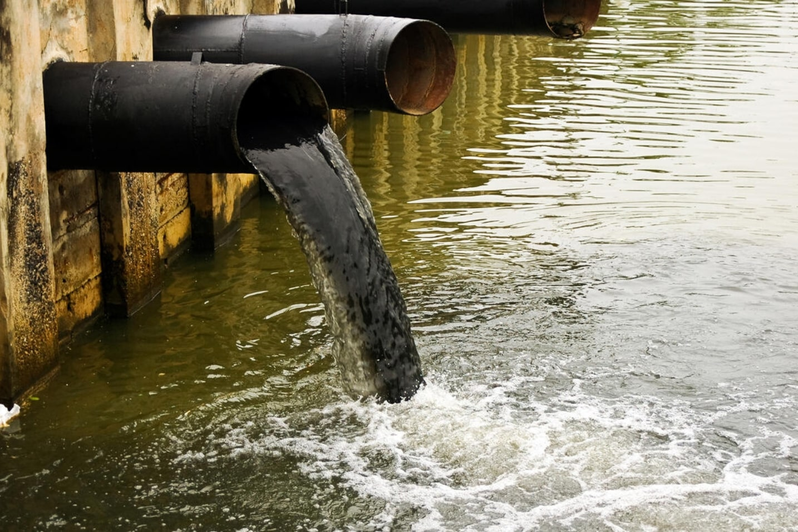
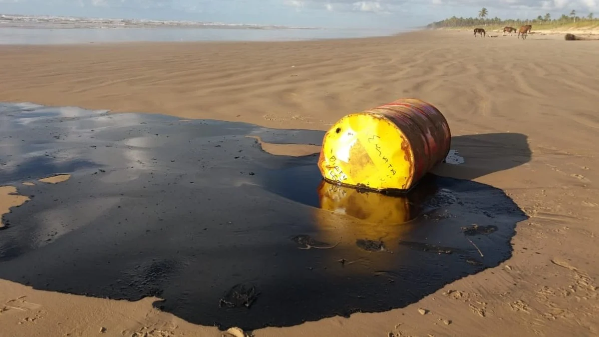
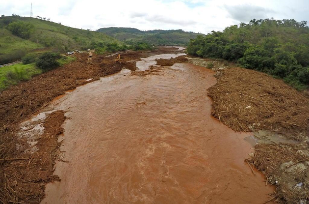
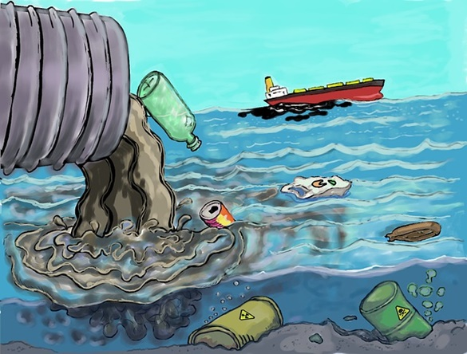
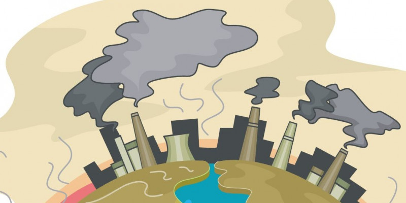

Poluição da água
Tipos, causas e consequências
A poluição da água é quando a água fica suja e perigosa por causa de coisas ruins que vão parar nela, como produtos químicos e coisas sujas. Isso é sério porque a água é muito importante para a gente! Ela é como um super-herói para nossos corpos, e a gente precisa dela para viver.
Nossa barriguinha pode aguentar um tempinho sem comida, até 50 dias! Mas sem água, não dá para ficar mais de quatro dias. Então, precisamos cuidar muito bem da água e não deixar que ela fique suja. Assim, podemos continuar saudáveis e felizes!
Causas da poluição
As fontes de poluição da água são separadas de duas formas. Vamos imaginar que estamos falando sobre formas diferentes de sujeira entrar em um lago.
Fontes pontuais
São como se alguém pegasse um balde de sujeira e despejasse direto no lago. É fácil ver de onde veio, porque podemos ver a pessoa com o balde. Um exemplo seria uma fábrica que joga resíduos diretamente na água.
Fontes não pontuais
São um pouco mais complicadas. É como se a sujeira viesse de muitos lugares diferentes, e não conseguimos ver exatamente de onde ela vem. Por exemplo, imagine que chove e a água da chuva leva um pouco de sujeira do solo, do lixo na rua e até do esgoto para o lago. Essa sujeira vem de muitos lugares, então é mais difícil de controlar e identificar.
Tipos de poluição
Vamos imaginar que a água é como uma festa de aniversário, e a poluição é como coisas que podem estragar a festa. Existem quatro tipos principais de “estraga-prazeres” na nossa festa da água:
Poluição sedimentar
É como se alguém jogasse um monte de areia na nossa festa. A areia pode vir do solo quando chove muito, ou quando as pessoas cortam muitas árvores, ou até mesmo quando uma barragem se rompe. A areia pode atrapalhar a festa porque bloqueia a luz do sol e dificulta a visão dos animais que estão na festa.
Poluição biológica
Imagine que alguém traga um monte de lixo para a festa. Esse lixo pode vir de esgotos domésticos e industriais, e pode conter restos de comida, fezes humanas e detergentes. Quando esse lixo se decompõe, ele usa todo o oxigênio da festa, o que pode fazer com que os peixes e outros animais aquáticos não consigam respirar. Além disso, esse lixo pode estar cheio de germes que causam doenças.
Poluição térmica
É como se alguém mudasse a temperatura da festa. Se ficar muito quente ou muito frio, isso pode afetar todos na festa. Por exemplo, se a água ficar muito quente, pode haver menos oxigênio para os peixes respirarem.

Poluição química
Imagine que alguém traga produtos químicos perigosos para a festa. Esses produtos químicos podem vir de indústrias que despejam resíduos em rios e lagos, ou de fazendas que usam muitos agrotóxicos. Esses produtos químicos podem ser muito perigosos para os animais na festa e também para as pessoas que bebem a água.
